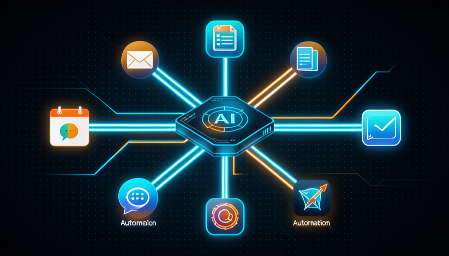

💡 ¿Eres nuevo aquí? Tres palabras antes de empezar
- Automatizar — hacer que una tarea se realice sola, sin que tengas que presionar nada cada vez.
- MCP — un «enchufe universal» que conecta la IA con tus apps (correo electrónico, calendario, hoja de cálculo). No necesitas entender la sigla; solo saber que es el cable.
- Disparador — lo que hace la automatización empezar: una hora, un correo nuevo, un clic tuyo.
🔎 Qué puedes automatizar en tu día a día
Antes de conectar cualquier cable, vale la pena detenerse y mirar tu día. ¿Dónde haces lo mismo cada semana, en piloto automático? Copiar datos de un lugar a otro, responder el mismo tipo de correo, preparar el mismo informe: ahí está el oro.
La regla es simple: tarea repetida + predecible + con reglas claras = excelente candidata. Una tarea poco frecuente o que cambia cada vez, no tanto. Empieza anotando 3 tareas tediosas que podrías hacer con los ojos cerrados.
✓ Buenos candidatos para automatizar
- ✓Resumir los correos del día cada mañana
- ✓Guardar archivos adjuntos en una carpeta específica
- ✓Avisar en el celular cuando llega un pedido nuevo
- ✓Armar el informe semanal de siempre
✗ Malos candidatos (por ahora)
- ✗Decisiones que cambian cada vez
- ✗Conversación delicada con un cliente
- ✗Algo que haces 1 vez al año
- ✗Tarea sin una regla clara de "correcto"
💡 Consejo práctico
La próxima semana, anota cada vez que pienses "ah, otra vez esto". Cada "otra vez" es un candidato. Al final de la semana, elige lo más frecuente y más molesto — este es tu primer objetivo.
Conceptos clave
🔌 Conectar la IA con tus apps (MCP en la práctica)
Por sí sola, la IA es como un electrodoméstico genial sin cables en el enchufe: hace cosas increíbles, pero no alcanza tu mundo. El MCP es exactamente ese hilo: una enchufe universal que conecta la IA con tu correo electrónico, tu agenda, tu hoja de cálculo.
Lo bueno es que no necesitas entender cómo funciona por dentro. Solo autoriza la conexión una vez («puedes leer mi agenda») y, a partir de ahí, puedes enviar cosas como «revisa lo que tengo mañana y mándame un resumen». La IA empieza a ver y modificar en esas apps por ti.
🔑 La idea central
Piensa en una regleta en el medio de la mesa:
- •La IA es el dispositivo que quiere trabajar.
- •El MCP es la regla: cada espacio es una de tus apps.
- •Tú decide qué cables conectar, y puedes desconectarlos cuando quieras.
💡 Consejo práctico
Empieza conectando una sola app — lo que más trabajo te da. Conectar todo de una vez confunde. Domina una conexión, gana confianza y solo entonces agrega la siguiente.
Conceptos clave
⚡ Activadores: qué hace que se inicie la automatización
Conectar las apps es la mitad. La otra mitad es responder: cuando ¿la IA debe actuar? Ese «cuándo» es el disparador — el detonante que hace que todo empiece sin que tengas que dar la orden en ese momento.
Hay tres tipos fáciles de entender. Cada automatización empieza por uno de ellos. Mira la línea de tiempo de cómo funciona un disparador:
⏰ Por horario
"todas las mañanas a las 8h"
La automatización se ejecuta a una hora fija. Es ideal para resúmenes diarios e informes semanales.
📬 Por evento
"cuando llegue un correo nuevo"
Algo sucede y la IA reacciona en el momento. Sirve para avisos y respuestas automáticas.
👆 Por ti (manual) MÁS SEGURO PARA EMPEZAR
"cuando presione el botón"
Tú lo ejecutas manualmente. Ideal para probar con calma antes de automatizarlo.
🎯 El patrón que debes detectar
Empieza manual, gana confianza y luego cambia al modo automático (por horario o evento). Dejarlo en automático antes de confiar es el error número 1 de quienes están empezando.
Conceptos clave
🔗 Un flujo sencillo de principio a fin
Ahora juntamos todo en una secuencia: se activa un disparador, la IA hace el trabajo y el resultado va al lugar correcto. Ese trío — disparador → IA → entrega — es el corazón de toda automatización. Mira el diagrama:
La imagen de abajo muestra la misma idea de otra manera: la IA en el centro, conectada con tu mundo, transforma entradas en entregas. Es exactamente lo que vas a armar a continuación.

🧪 Arma tu primer flujo (5 minutos)
Objetivo: describir una automatización completa en 3 pasos, lista para que la armes. Pega el texto de abajo en Claude (con tus apps conectadas) y reemplaza los fragmentos entre < >.
Quero montar uma automação simples em 3 passos. 1) GATILHO: começar <quando, ex: toda manhã às 8h>. 2) IA FAZ: <a tarefa, ex: ler meus e-mails não lidos e resumir os 3 mais importantes>. 3) ENTREGA: mandar o resultado para <onde, ex: uma mensagem no meu WhatsApp/Telegram>. Antes de montar, me liste o que você precisa que eu autorize, e como vou testar se funcionou na 1ª vez.
Cómo saber si funcionó: la IA debe confirmar el disparador, qué va a hacer y dónde lo entrega, y pedirte solo los accesos necesarios. Ejecútala una vez manualmente antes de dejarla en automático.
Conceptos clave
🔒 Seguridad y permisos (lo básico)
Conectar la IA con tus apps es poderoso, y por eso requiere un poco de cuidado. La regla de oro es acceso mínimo: da solo lo que la tarea necesita, ni un acceso más. Si la automatización solo lee correos electrónicos, no necesita poder eliminar nada.
Piensa en cómo lo haces con alguien nuevo que te ayuda: empieza dando poca llave, observa y solo amplía cuando confía. Con la IA es igual. Y las acciones que realmente tienen efecto (enviar, pagar, borrar) merecen una "¿confirmas?" antes.
✓ Hábitos seguros
- ✓Dar solo el acceso que exige la tarea
- ✓Pedir confirmación para acciones que realizan cambios
- ✓Probar primero con algo pequeño
- ✓Revisar de vez en cuando lo que está conectado
✗ Riesgos que debes evitar
- ✗Dar acceso total «para facilitar»
- ✗Dejar que borre o envíe sin confirmar
- ✗Conectar todo de una vez sin probar
- ✗Olvidar las conexiones antiguas activadas
💡 Consejo práctico
Antes de autorizar cualquier conexión, hazte tres preguntas: "¿Qué va a poder ver? ¿Qué va a poder cambiar? ¿Cómo lo desactivo si hace falta?". Si conoces las tres respuestas, puedes seguir con tranquilidad.
Conceptos clave
🚫 Cuándo NO automatizar
El entusiasmo de principiante lleva a querer automatizarlo todo. Pero no todas las tareas lo merecen. Saber cuándo no automatizar está tan maduro como saber montar el flujo. Automatizar algo equivocado cuesta más tiempo del que ahorra.
La regla: si la tarea es poco común (lo haces una vez al mes), delicada (interactúa con personas, dinero, reputación) o requiere criterio humano que cambia cada vez — déjalo en tus manos, o pídele a la IA que solo haga un borrador y tú decides.
📊 Las tres señales de «déjalo en sus manos»
- •Poco frecuente: ocurre tan poco que no vale la pena crear la automatización.
- •Delicado: un error aquí cuesta caro (cliente enojado, dinero perdido).
- •Mutable: la decisión depende del contexto y cambia cada vez.
Traducción: en estos casos, usa la IA para ayudar (hacer un borrador, sugerir), pero deja la decisión final en tus manos.
✋ Antes de seguir — ¿cuál es la mejor primera tarea para automatizar?
🎓 Resumen del módulo
Siguiente módulo:
2.4 — 🤖 Agentes que hacen el trabajo: delega tareas completas y pon a varios agentes a trabajar al mismo tiempo.